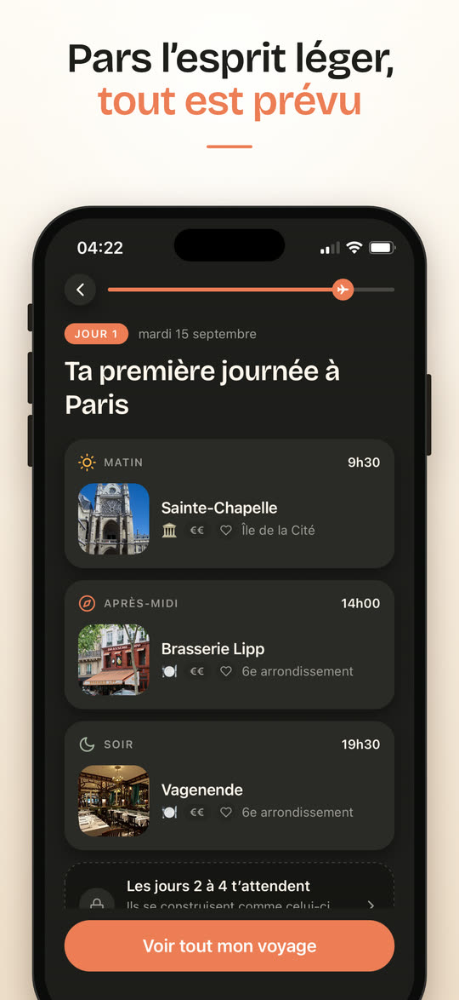
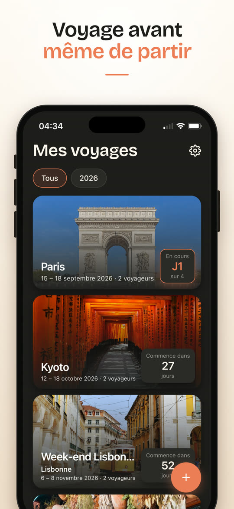
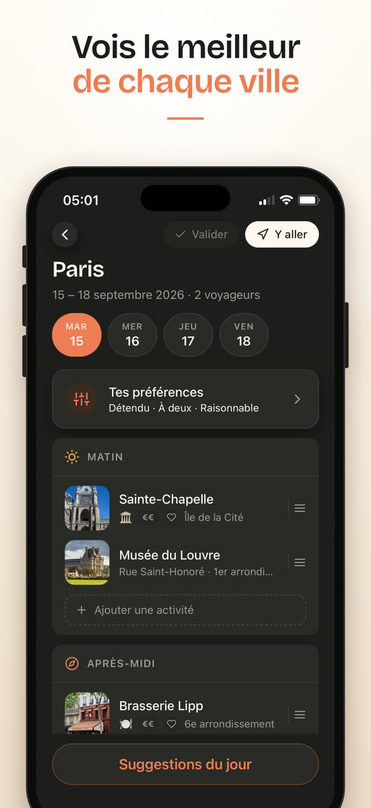
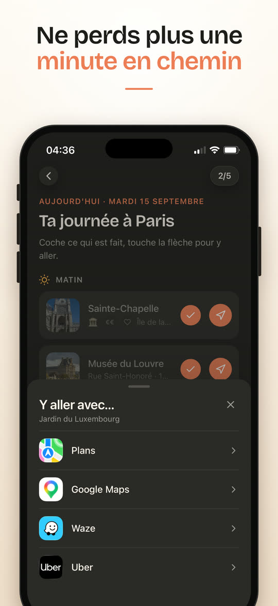
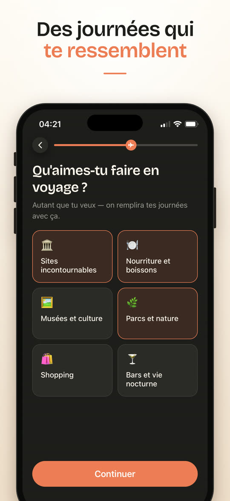

TraverseItinéraire voyage · iPhone
Ton voyage organisé jour par jour
Dis où tu pars, quand et ce que tu aimes : Traverse organise chaque matin, après-midi et soir de ton voyage.
Traverse existe pour l'instant uniquement sur iPhone.
Télécharger sur l'App StoreTéléchargement gratuit sur iPhone
Ou cherche « Traverse itinéraire » dans l'App Store.





- Chaque journée déjà organiséeMatin, après-midi et soir, jusqu'à 30 jours de voyage.
- Des adresses choisies pour toiSites incontournables, restaurants, musées, selon tes goûts, ton rythme et ton budget.
- Tu y vas en un gesteChaque adresse s'ouvre dans Plans, Google Maps, Waze ou Uber.